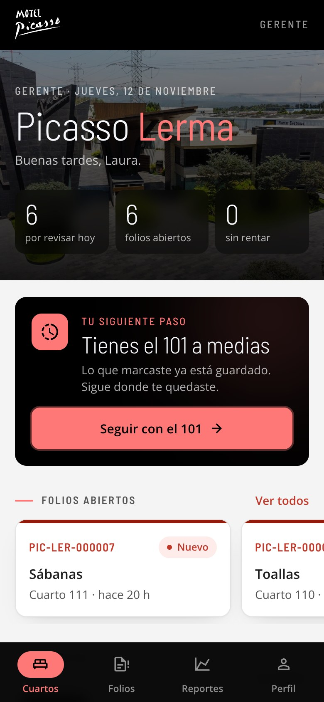

COMETAXcometax.click
Preparado para
Cada cuarto, revisado.
Cada falla, resuelta.
La app de mantenimiento y limpieza de las seis sucursales de Motel Picasso, con su propio checklist, ya está construida.
6sucursales en un solo panel
4puestos con su propia vista
54puntos de checklist, más el equipo de cada cuarto
4reportes en PDF listos para mandar
Del papel al celularAma de llaves y gerente revisan cada cuarto desde el celular y tocan solo lo que está mal. Cada revisión queda con nombre, fecha y hora.
Ninguna falla se pierdeCada falla abre un folio con foto y no se cierra sin la foto de la reparación. El historial solo se agrega.
La renta, con evidenciaEl gerente decide si el cuarto se renta y deja el motivo.
Las seis casas en una vistaRevisiones, folios abiertos, cuartos sin rentar e indicadores por sucursal, sin llamar a nadie.
Seguro y documentadoPermisos revisados en el servidor, fotos privadas, pruebas automáticas, listas de QA y documentación completa.


Cómo seguimos
1Lista para producciónServidor, dominio con HTTPS y respaldos.
2Piloto en una sucursalDatos reales y la línea base medida.
3Las seis sucursalesAlta, capacitación por puesto e indicadores.
4Más fácil para el personalAvisos al gerente y fotos sin señal.
Agendemos la revisión del piloto
Una reunión con la dirección para confirmar reglas, elegir la sucursal y acordar alcance y montos.
cometax.click@cometaxcompany
CometaX — Tecnología diseñada para resolver, evolucionar y escalar.Capturas con datos de ejemplo · Noviembre 2026